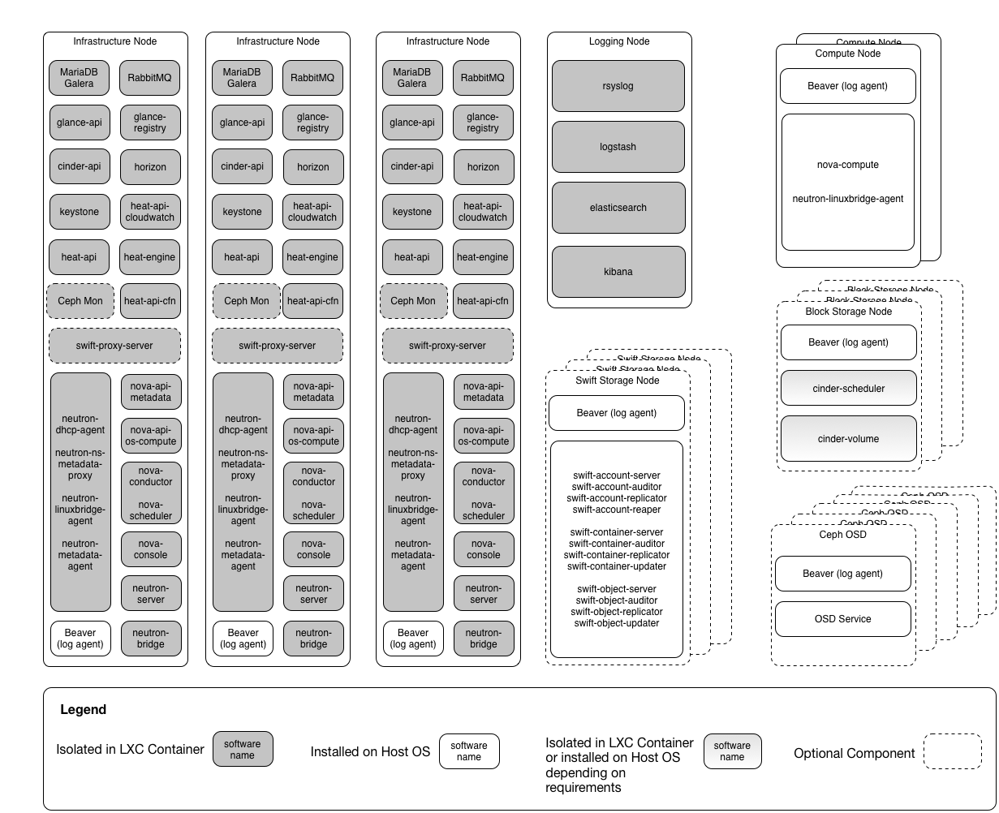

RCPO component details#
The RCPO high level components are comprised of multiple interrelated components running on multiple servers. In order to facility a smoother upgrade process we put most of those components in LXC containers.
The following diagram provides an overview of the interrelated components and which server(s) they are on.
